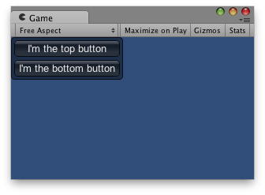

Description 描述
Disposable helper class for managing BeginVertical / EndVertical.
All controls rendered inside this element will be placed vertically below each other. The group must be closed with a call to EndVertical.

Vertical Layout.
using UnityEngine;
public class ExampleClass : MonoBehaviour { void OnGUI() { // Starts a vertical group using (var verticalScope = new VerticalScope("box")) { GUILayout.Button("I'm the top button"); GUILayout.Button("I'm the bottom button"); } // The group is now ended } }
Constructors
| GUILayout.VerticalScope | Create a new VerticalScope and begin the corresponding vertical group. |